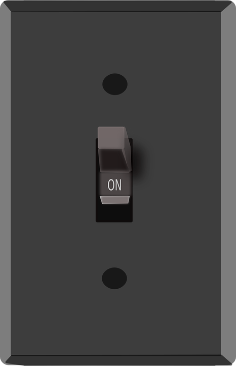

Using electricity is

In a single day, aproximately how many hours are you using electricity?
I use electricty for 7-10 hours a day.
I use electricty for 3-6 hours a day.
I use electricty for 2 hours or less a day.
Back
Home